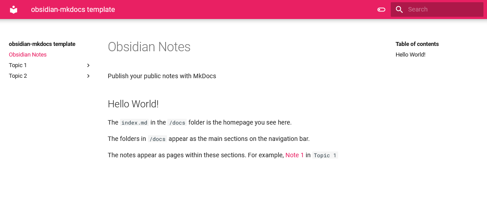
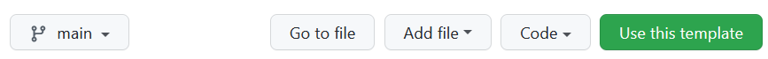
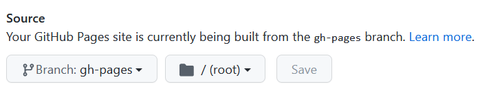

官方教程
MkDocs template
Would you like to take some of your notes in Obsidian and make it public?
This template gives you an easy (and automated) way to publish your Obsidian notes (or blog!) on your Github pages.
With this template, you get these out-of-the-box:
- an awesome website based on Material theme, complete with a search bar (Checkout this template repo published here)

- get the Obsidian/Roam style
[[wikilinks]]from your vault in your published notes - Toggle between light and dark mode
- Blog folder
Quick start¶
- Create a new github repository using this template. Click the green button at the top or use this link.

- Give a name to your repository. By default your notes will be published at
<https://username.github.io/repo-name/>- Copy only the
mainbranch while creating the repo from the template
- Copy only the
- Clone the repository you generated into your Obsidian folder/vault.
- Move your notes that you would like to make public to the
repo-name/docsfolder.- Easiest way to do this would be using drag and drop within Obsidian
- Commit and push the changes. Github actions will take care of the rest, publishing your notes using MkDocs, with the Material theme.
- Go to
Settings > Pagesand select the select the Source as yourgh-pagesbranch.

Not working for you? Open an issue and let me know what went wrong.
Configuring your website¶
How do I arrange notes as sections and pages?¶
By default, the sections and pages will follow the folder structure within /docs. The folders and sub-folders will show up as sections. Try not to have white spaces in your folder and file names, as these will be converted to HTML links. The webpage heading will be the same as the first-level heading in the markdown note.
- If you would like to arrange the pages manually, then use the
navoption in themkdocs.ymlconfiguration file at the root of this repo to set custom page navigation.- For example, see the setup for the Blue Book at github. Managing each page using
navcan become cumbersome as the number of notes increase though!
- For example, see the setup for the Blue Book at github. Managing each page using
- The Materials theme provides multiple options to arrange sections, use navigation tabs, and many other helpful navigation setups
Alternatives¶
- binyamin/eleventy-garden: :seedling: A starter site for building a mind garden with eleventy
- datopian/obsidian-flowershow: plugin for publishing with flowershow direct from your obsidian vault.
- kmaasrud/oboe: tool to convert an Obsidian vault into a static directory of HTML files.
- Jackiexiao/foam-mkdocs-template: template for Obsidian/Foam using mkdocs/mkdocs-material/mkdocs-roamlinks-plugin
- foambubble/foam-template: Foam workpace template
- ObsidianPublisher/obsidian-mkdocs-publisher-template: Obsidian Mkdocs Publisher, a free obsidian publish alternative throught Mkdocs
- KosmosisDire/obsidian-webpage-export: Webpage HTML Export lets you export single files or whole vaults as HTML websites or documents. It is similar to publish, but you get direct access to the exported HTML.
- Enveloppe/obsidian-enveloppe: publish your notes on a GitHub repository from Obsidian Vault